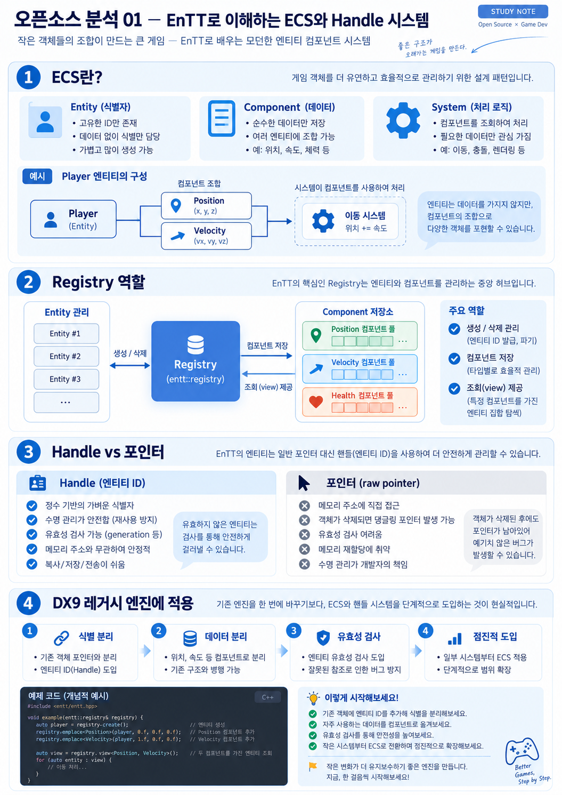

게임 캐릭터 그 자체라기보다, 캐릭터를 구분하는 ID라고 생각해.
EnTT로 이해하는 ECS와 Handle 시스템
C++ 게임 엔진의 객체 식별과 구성 요소 관리를 실제 오픈소스 설계에서 살펴봅니다.
먼저 이 세 가지를 기억해
위치(Position), 속도(Velocity), 체력(Health) 같은 데이터를 붙여줘.
위치와 속도를 가진 대상을 찾아 실제로 이동시켜.

그림을 따라가며 이해해 보자
- 게임 속 플레이어를 생각해. Player는 하나의 Entity ID고, Position과 Velocity 정보가 연결돼 있어. 포지션과 속도 자체가 Player 클래스의 상속 계층일 필요는 없어.
- Registry는 관리 창고야. Entity를 만들고 없애며, 각 Entity에 연결된 컴포넌트를 저장해. 이동 시스템은 두 컴포넌트가 있는 대상을 조회해 갱신할 수 있어.
- Handle은 '주소'가 아니라 '찾아갈 번호'야. 엔티티가 사라졌을 때 Registry에 유효성을 물어볼 수 있어. 단, 번호만 쓰면 자동으로 안전해지는 건 아니고 재사용·수명 검증이 필요해.
- 실무에선 조금씩 전환해. DX9 엔진 전체를 ECS로 바꾸기 전에, 위치나 속도처럼 간단한 데이터부터 분리하는 게 현실적이야.
한 줄 요약
“객체가 모든 데이터를 직접 들고 있기보다, ID에 필요한 데이터를 붙이고 시스템이 처리한다.”
※ 이해를 돕는 개념도야. EnTT를 이용하는 모든 프로젝트가 동일한 구조인 것은 아니며, 아래 C++ 예제를 함께 확인해 줘.
📘 자세한 기술 설명·코드·실습 펼치기
skypjack/entt · C++ 기반 ECS 및 유틸리티 라이브러리. 이 샘플은 공개 API 개념에 대한 입문용 해설이며 특정 커밋의 코드를 직접 검증한 상세 리뷰는 아닙니다.
C++ · ECS · Registry · Entity1. 해결하려는 문제
전통적인 상속 기반 게임 오브젝트는 데이터와 동작이 깊이 결합되기 쉽습니다. ECS는 엔티티를 식별자, 컴포넌트를 데이터, 시스템을 처리 로직으로 나누어 이를 완화합니다.
기존 방식
GameObject → Character → Monster 같은 상속 구조. 기능 추가가 클래스 의존성을 키우기 쉽습니다.
ECS 방식
Entity ID + Position/Velocity/Health 등 필요한 데이터 조합. 시스템이 관련 데이터만 순회합니다.
2. 핵심 사용 예제
#include <entt/entt.hpp>
struct Position { float x, y; };
struct Velocity { float x, y; };
int main() {
entt::registry registry;
const auto entity = registry.create();
registry.emplace<Position>(entity, 0.f, 0.f);
registry.emplace<Velocity>(entity, 2.f, 1.f);
auto view = registry.view<Position, Velocity>();
for (auto e : view) {
auto &p = view.get<Position>(e);
const auto &v = view.get<Velocity>(e);
p.x += v.x; p.y += v.y;
}
}3. Handle과 포인터의 차이
엔티티 ID는 오브젝트 메모리 주소가 아닙니다. 생명주기와 컴포넌트 소유권을 Registry가 관리하므로, 엔티티가 파괴될 때 포인터의 댕글링 위험을 줄이는 설계가 가능합니다. 단, 오래 저장한 ID가 여전히 유효한지는 항상 확인해야 합니다.
4. DX9 레거시 엔진에 적용한다면
- 우선 렌더 오브젝트 포인터와 게임 플레이 객체 식별을 분리합니다.
- Position과 Renderable 같은 데이터부터 명시적인 저장소로 옮깁니다.
- Handle 유효성 검사와 객체 파괴 시점 테스트를 추가합니다.
- 기존 코드 전체를 한 번에 ECS로 교체하지는 않습니다.
실습 과제 보기
몬스터 100개를 생성하고 Position과 Velocity를 갱신하세요. 삭제한 엔티티에 접근하는 상황을 만들어 유효성 검사를 추가해 보세요.
더 깊게 볼 질문
엔티티 식별자를 포인터로 관리할 때와 generation/version이 있는 핸들로 관리할 때, 객체 재사용 문제가 어떻게 달라지는가?
공식 자료: EnTT Wiki · GitHub 저장소